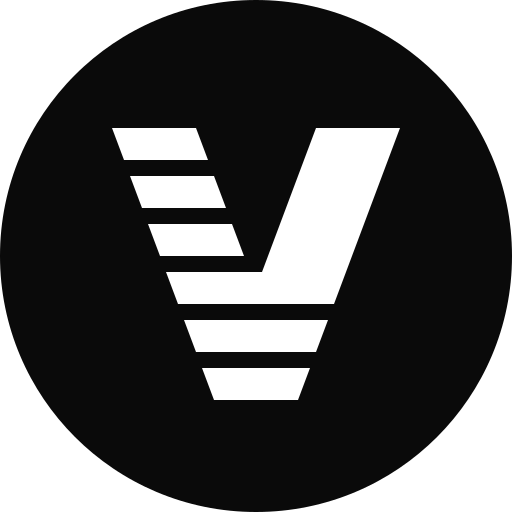
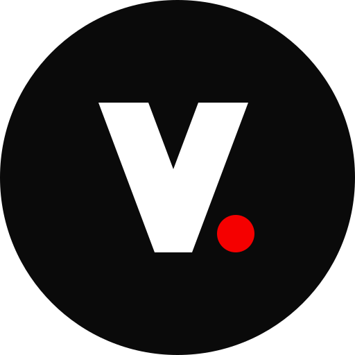
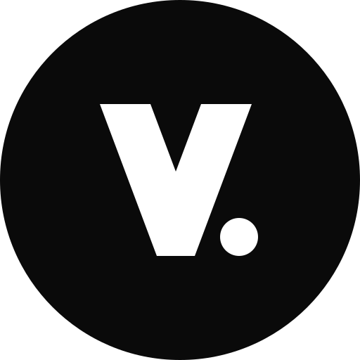
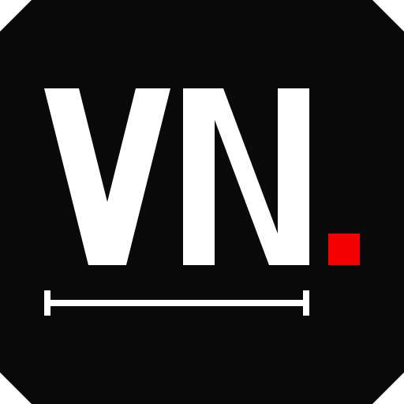
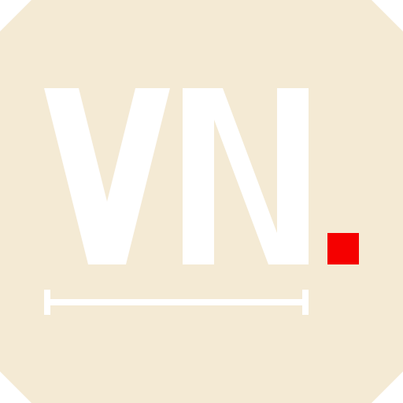
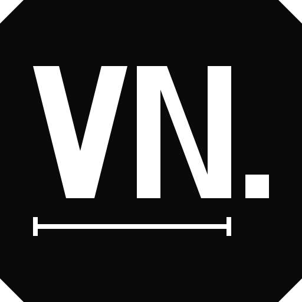

M0 · três conceitos vetoriais · Creme #f4ead4 · Tinta #0a0a0a · Sinal #f50000 · fundo Sinal usa a versão tinta única
O V de listras de velocidade refinado: grade de 4/8 unidades, altura 32, vão 16 (8 no lado interno), inclinação 3:8 (20,56°), círculo verdadeiro.


V. : um V grosso, na mesma inclinação 3:8, com o ponto final em Sinal encostado na linha de base. É o ponto do wordmark virando símbolo.



VN em ladrilho com cantos chanfrados, traço mono, ponto final quadrado (como o de JetBrains Mono) e uma linha de cota de desenho técnico.


